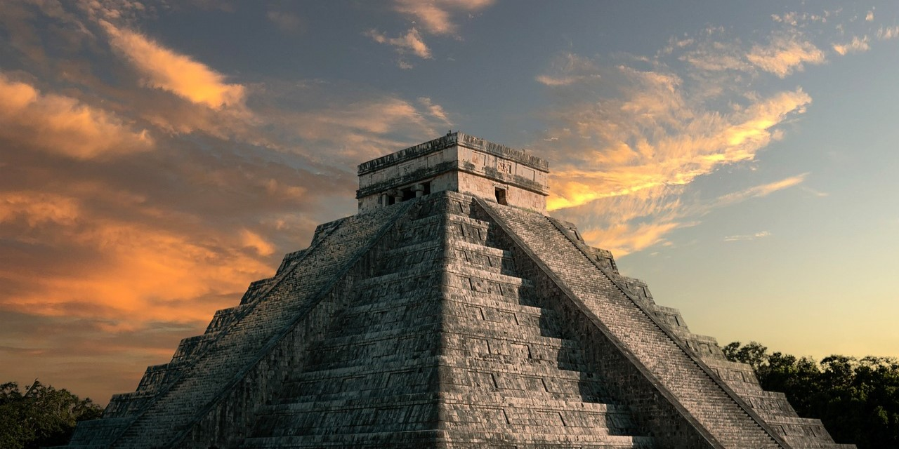
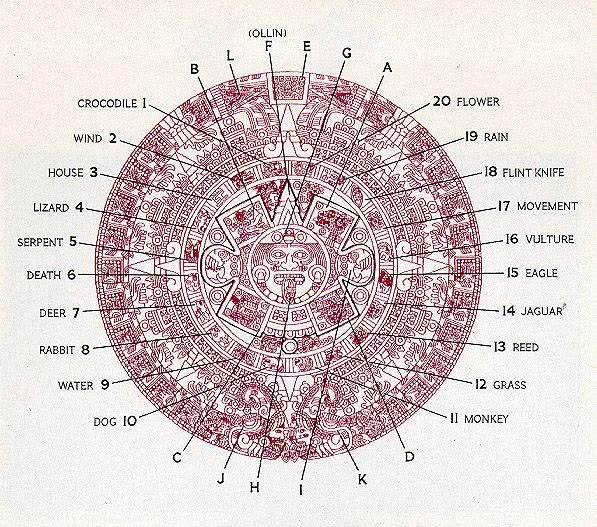
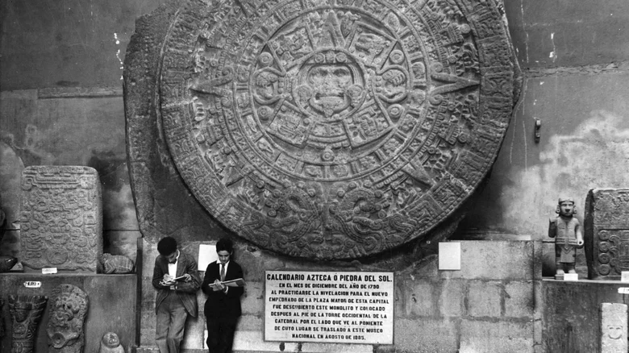

"Eternal Sun's Stone of Time"
Aztec · 1502-1521 BCE

Exhibition 03
Tenochtitlan · Aztec Empire
Discover the Aztec Sun Stone, a monumental carving that reveals the Mexica understanding of time, creation, and the cosmos. At its center lies the sun deity, surrounded by symbols representing the cycles of existence and the legendary Five Suns.
Location
Tenochtitlan, Aztec Empire
Era
c. 1502-1521 CE
Collection
Native America
"Eternal Sun's Stone of Time"
The Aztec Sun Stone, also known as the Calendar Stone, is a large stone disc that was discovered in Mexico City in 1790. It is one of the most famous artifacts from the Aztec civilization and is believed to have been created during the Aztec Period from 1502 to 1521. Featuring the face of the Sun God Tonatiuh of the Aztecs at the center of its structure, it represents the five suns, which also symbolise the five eras of the Aztec cosmology. In this system, we would currently be in the fifth era, indicated by its innermost section where the many features at the center would translate to "Four Movements". In this page, we'll explore each of these eras, and see how they fell, as well as how our current era is said to end.


"Nahui-Ocelotl" Jaguar: In the first world, a heated clash between two gods, Tezcatlipoca and Quetzalcoatl, disrupted the cosmos. After a strike from the sky by Quetzalcoatl, Tezcatlipoca became enraged, transforming himself into a mighty jaguar and summoning countless smaller ones. These jaguars would then go on to hunt down every living being, bringing the First Era to an end.
"Quetzalcoatl" Wind: After the First Era ended, Quetzalcoatl took over as ruler of the world and restored humanity. However, Tezcatlipoca seeked revenge and summoned devastating hurricanes and winds that tore apart forests, mountains and cities. While most people died, those who survived turned into monkeys, marking the end of the Second Era.
"Quiahuitl" Fire Rain: The Third Era was associated with Tlaloc, the Aztec god of rain and fertility. At first, the Earth prospered, but a vengeful Tezcatlipoca returned again and took away Tlaloc's wife. Tlaloc stopped sending rain down to earth, and unleashed his anger with fiery rocks and volcanic ash raining down from the heavens, putting an end to the world once more.
"Atl" Water: Following the Third Era, the Fourth Era was ruled by Chalchiuhtlicue, the goddess of rivers, lakes and oceans. Her once peaceful reign was disrupted by Tezcatlipoca accusing her of pretending to care for humanity just for praise. Chalchiuhtlicue was deeply hurt by this and cried endlessly, her tears flooding the entire planet. Humans transformed into fish as this era ended.
"Ollin" Movement: We arrive at the Fifth Era, which is the present that is represented by Sun God Tonatiuh. After the previous worlds ended, the gods gathered to create a new sun. At first, the sun was motionless, and many gods had to sacrifice themselves to give it the power to move. The Aztecs believed this era would end in catastrophic earthquakes before starting a new era and restarting the cycle.
A picture of the display of the Sun Stone at the Aztec Hall of the National Museum of Anthropology in Mexico City.

An old picture of a few people beneath the Sun Stone, showcasing its size.

The Zocalo in Mexico City, where the Sun Stone was found buried in 1790.

A replica of the original appearance of the Sun Stone before it was discovered, with its original colors and details.

A picture of the display of the Sun Stone at the Aztec Hall of the National Museum of Anthropology in Mexico City.
An old picture of a few people beneath the Sun Stone, showcasing its size.
The Zocalo in Mexico City, where the Sun Stone was found buried in 1790.
A replica of the original appearance of the Sun Stone before it was discovered, with its original colors and details.